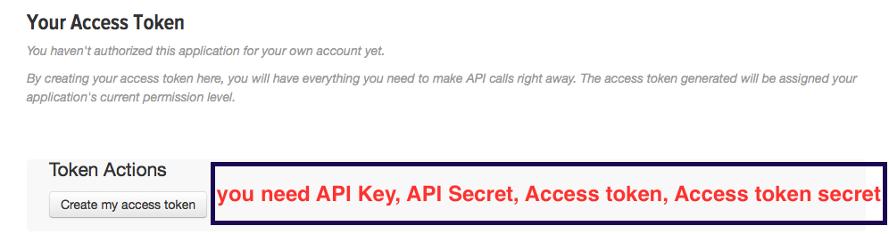
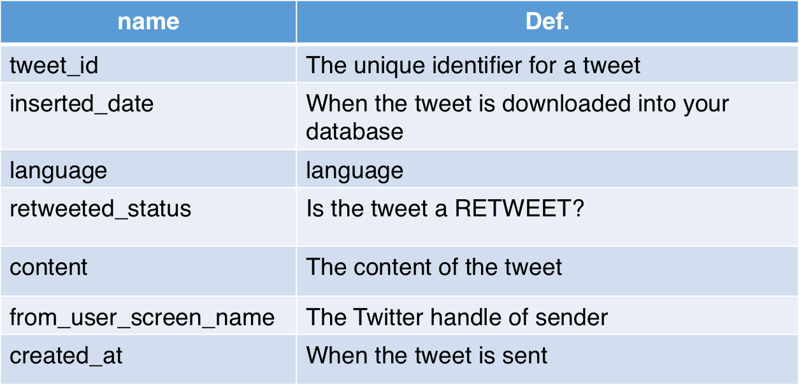
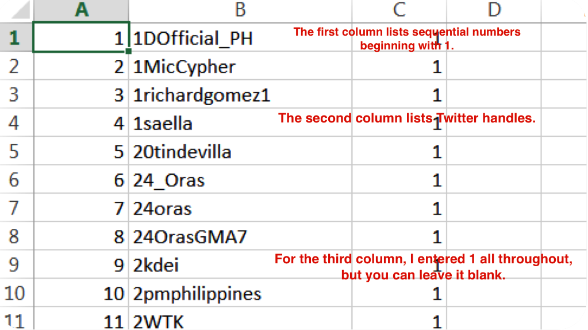
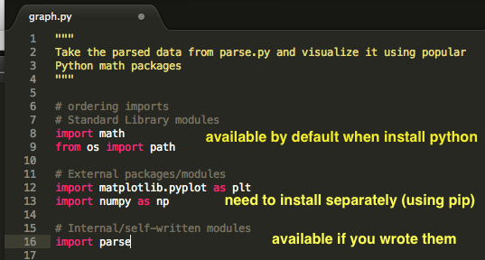
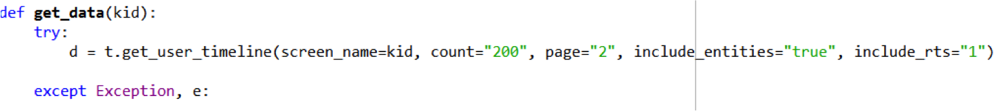

Mining Twitter with Python
Brought to you by CodeKitchen
Before we start
Make sure you have Python, Sublime Text or some other text editor installed.
In this workshop we will talk about is API and how to interact with it through example of Twitter's API.
Part 1: What is an API?
API stands for Application Programming Interface. Formally, it is a set of routines, protocols, and tools for building software applications.
Think of them as
Doors to Code or Data
APIs are sets of requirements that govern how one application can talk to another.
APIs "expose" some of a program's internal functions to the outside world in a limited fashion. That makes it possible for applications to share data
Examples:
- Yelp displays nearby restaurants on a Google Map in its app
- Video games now let players chat and invite friends to play via Facebook, right there in the middle of a game
Part 2: How to interact with Twitter API?
Part 2.1: Setting up API keys
We need keys to get Twitter data through Twitter API. You need: API Key, API Secret, Access token, Access token secret. First, go to https://apps.twitter.com/, and sign in with your Twitter account. Go to my applications page to create an application.
After creating the app, go to Keys and Access Tokens tab, scroll down to the bottom and click Create my access token. Wait for a few minutes and refresh the page, then you get all your keys!
Determine which part of the Twitter API you’ll need to access — there are different API methods for accessing information on tweets, retweets, users, following relationships, etc.
You can look at definitions for the variables returned from API later, below is a list of some important output variables for today's workshop.
Part 2.2: Prepare a Twitter handle list
Part 2.3: Installing necessary Python packages
To use our code, you need the following libraries:
- Simplejson (
https://pypi.python.org/pypi/simplejson) - Twython (
https://twython.readthedocs.org/en/latest/index.html) - Sqlite3 (
http://sqlite.org/) - Sqlalchemy (
http://www.sqlalchemy.org/)
Before we start installing them...
Let's talk about different types of packages in Python
Installing necessary external Python libraries
On a Mac or Linux, open the Terminal and type pip install Twython and pip install simplejson.
On Windows, open CMD, type in the command line pip install Twython.
Part 2.4: Create a SQLite database
Go to http://sqlitebrowser.org/ and download SQLite Database Browser. It allows you to view and edit SQLite databases.
Go to File-New Database to create a new database.
Remember the database filename you enter.
The default file extension is .sqlite, to prevent future complications, add the extension .sqlite when typing filename.
Use File-Import Table From CSV File, import the .csv file you’ve saved. Name the imported table as accounts. This table name corresponds to the one we will use in Python script. After you click create, the csv list will be loaded into the database, and you can browse it in Browse Data. Lastly, remember to save the database.
Modify the imported table: Go to Edit-Modify Tables, use Edit field to change column names. To correspond to the Python script, name the first column as rowid, and Fileld Type as Integer; the second column as screen_name, and Field type Text, and the third as user_type, and Text. In the end, the database table is defined as the screenshot.
Part 2.5: Modify the script and Run
Find this block of code, and enter your API Keys.

Find this block of code, and enter the filename and file path of the SQLite database you have created.

You can refine search criteria:
 count specifies the number of tweets to try and retrieve for each Twitter handle. The maximum value is 200.
Read more here